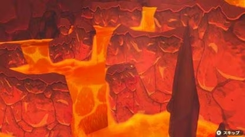
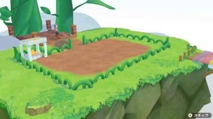

Salud


Mientras cultivas y haces diversas tareas en Story of Seasons: Pioneers of Olive Town, tu resistencia bajará y acabará por agotarse por lo que debes ir a la cama antes de que esto ocurra sino quieres desmayarte.
Sin embargo, puedes aumentar tu resistencia hasta seis corazones más, lo que le permite hacer más cosas durante un día. Para hacer esto, tendrás que encontrarte con el espíritu, que apareció después de que recolectamos 100 duendes y entramos en Villa Oliva. Puedes encontrar duendes seguidores mientras realizas muchas acciones diferentes, como minería, agricultura y tala de árboles, entre otras cosas.
En el santuario al norte de la ciudad, puedes gastar tus puntos en mejoras, incluido suelo mejorado para tu granja y acceso a nuevas áreas mágicas. La primera actualización de resistencia costará 10 puntos, después de esto el precio seguirá subiendo.
En el santuario al norte de la ciudad, puedes gastar tus puntos en mejoras, incluido suelo mejorado para tu granja y acceso a nuevas áreas mágicas. La primera actualización de resistencia costará 10 puntos, después de esto el precio seguirá subiendo.
Aumentar la resistencia máxima
Aqui puedes aumentar tu resistencia maxima completando algunos minijuegos a lo largo del juego.
Consigue una puntuación alta en el minijuego Special Mine
Una vez que hayas desbloqueado la Cueva de Lava, podrás participar en un minijuego especial. Al obtener una puntuación alta dentro del límite de tiempo, puedes ganar +2 corazones de resistencia máxima . Obtienes acceso a la Cueva de Lava al alcanzar el nivel 30 de la Mina en el Área 2.
Completa el minijuego en la isla Beanstalk.
Después de encontrar 60 Earth Sprites, se desbloqueará un área de isla especial. Al anotar 55 puntos o más en el minijuego aquí, obtienes +2 corazones.
Obtén favores de los duendes de la tierra
Al norte de la ciudad hay un Santuario, donde puedes usar puntos de Earth Sprite para obtener bendiciones del Espíritu de la Fuente. Cada bendición aumenta alrededor de 2 corazones de resistencia máxima y puedes obtener hasta 3 bendiciones gastando 70 puntos. Esto suma alrededor de 6 corazones de resistencia máxima.